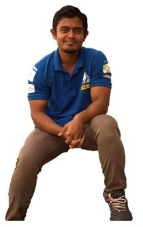

|  | MOHAMMAD CHAND KHANMaster's Student I am a multipotentialite.
With a background in Mechanical & Mechatronics Engineering worked in Robotics, Micro-controllers, Automotive, Aero-dynamic, parameter optimization and Machine Learning projects.
|
Master of Science in Mechatronics Engineering (University of Rome Tor Vergata, Rome, Italy) (2018-Ongoing)
Bachelors in Mechanical Engineering (with Distinction) │Grade 12 (90 %) │Grade 10 (94 %)
| MECHANICS | MECHATRONICS | COMPUTER |
|---|---|---|
| Solidworks | Matlab | JAVA |
| Ansys | Simulink | NodeJS |
| AutoCAD | simscape | AngularJS |